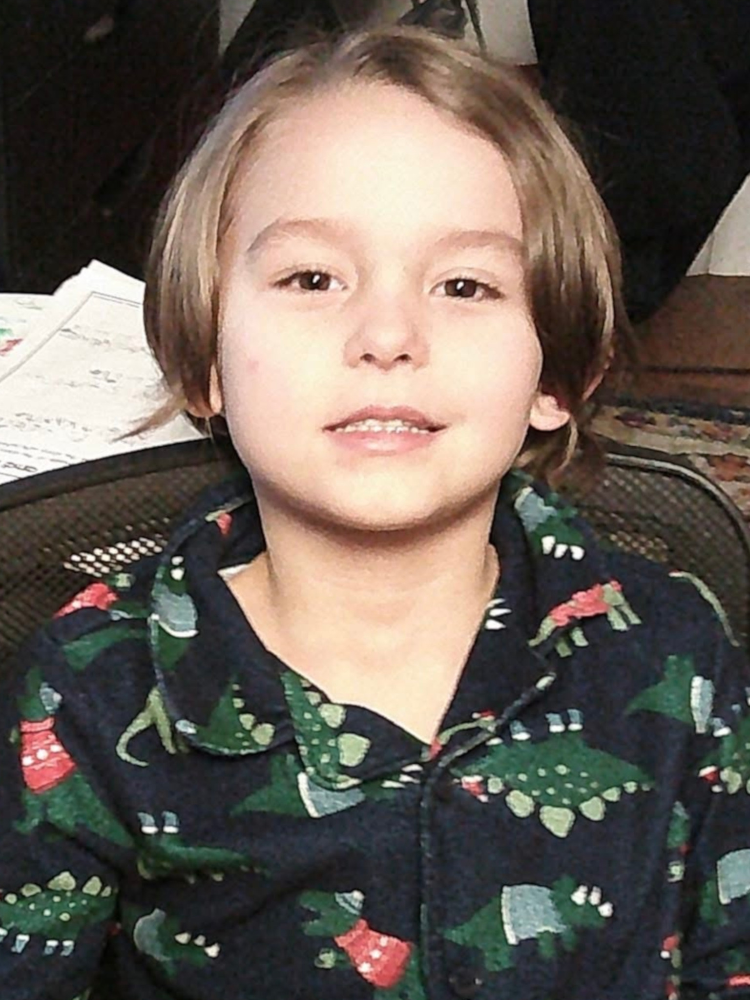
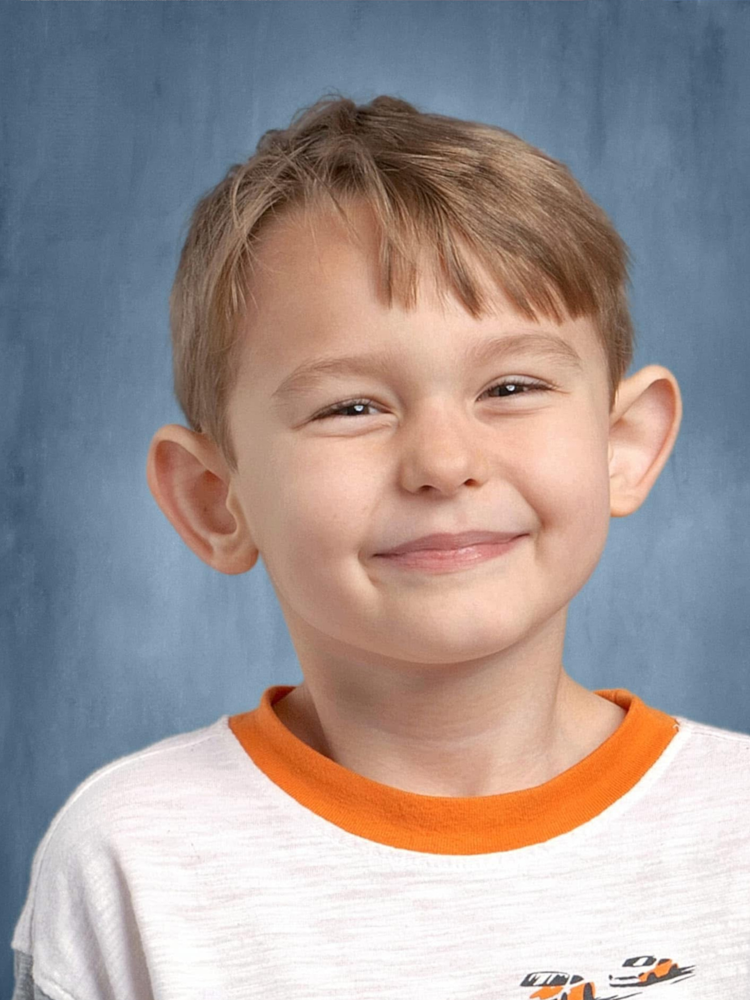
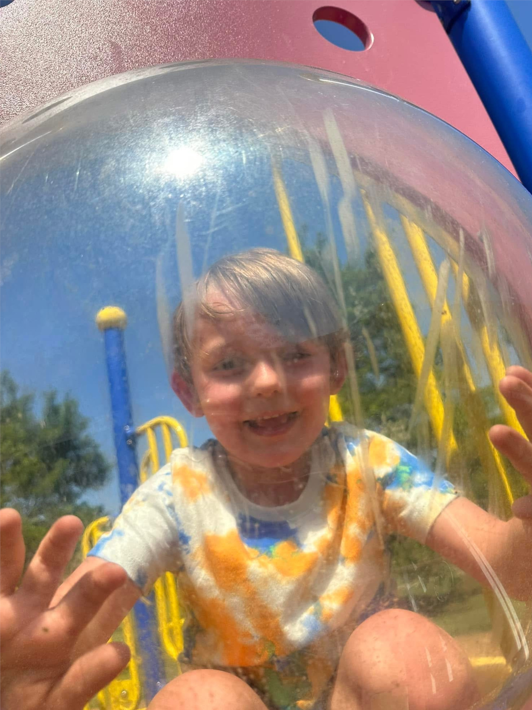

Xavier
Xavier was born in Chattanooga, Tennessee on May 31st, 2019. Now being almost 7 years old, he's developed such a great personality. He is kind, loving, and thoughtful when it comes to others. He has the best humor, and is so undeniably cool. Xavier loves to spend his time playing with his toys, hanging out with his momma, and playing video games. He has a large stuffed animal collection, and has given every single one a name. Xavier's favorite food is cheese pizza, and cookies.



Recent Interests
Xavier has a very creative mind. He loves to make crafts, and drawings. Xavier wants to be an artist when he grows up. He has also became interested in making games along with his dad. Recently at school, he was able to 3D print a shark all by himself! This has given him the opportunity to take a field trip to Volkswagen to showcase his shark!
Xavier's Favorite Games
- Minecraft
- Fortnite
- Super Mario Maker 2
- Spyro